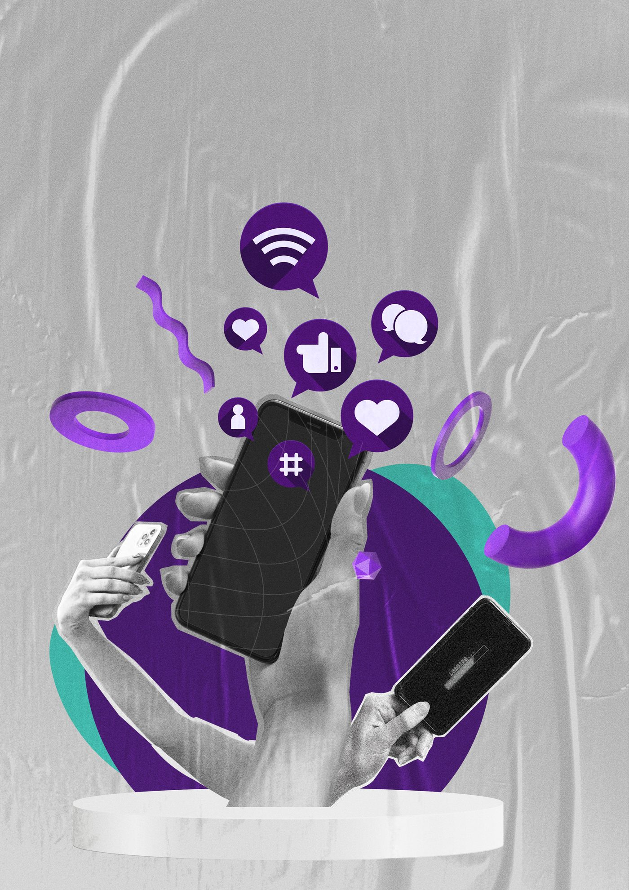

01
Audit & Strategy
We review existing channels and build a content plan around your audience, goals, and industry.
Social Media Management
Content, strategy, and consistent page management that turns followers into customers, for brands in Tripoli, Beirut, Jbeil, Batroun, and across Lebanon.
What We Do
Colart manages social media channels end to end, from the content calendar to the captions to the day-to-day posting, so a brand's pages stay active, consistent, and recognizably its own.
Every plan is built around the platforms a business actually needs, whether that's Instagram and Facebook for a restaurant in Batroun or a broader multi-platform presence for a growing retail brand in Beirut.
A social media retainer runs on a simple monthly rhythm, from understanding the brand to reporting on what worked.
We review existing channels and build a content plan around your audience, goals, and industry.
Our team designs posts, captions, and creative built specifically for each platform.
Content goes out on a consistent schedule, with page management handled end to end.
We track what's working each month and adjust the strategy to keep growth moving.
Social media management works differently for every type of business. Here's who we build it for most often.
For hospitality brands that need stronger visuals, better storytelling, and content that makes people want to visit, order, and remember them.
For businesses that need branding, packaging, content, and campaigns that make their products look sharper and sell with more confidence.
For businesses that want to present themselves more professionally, build trust faster, and stop looking scattered online.
For individuals building something from the ground up who need a clear brand, strong online presence, and content that helps them launch, grow, and stand out with confidence.
For academic institutions that need clearer communication, stronger enrollment campaigns, and a digital presence that builds trust with students and parents alike.
Where We Work
Whether you're based in Tripoli, Beirut, Jbeil, or Batroun, most of the day-to-day work, content reviews, and planning calls happen online.
A few of the social media management campaigns Colart has run for real clients.
0 to 24,100 Instagram followers in 3 months for a dry cleaning business in Doha, Qatar, through consistent content and page management.
One organic Reel reached 2.4M accounts and brought in 5.6K new followers for this Lebanese bakery, with $0 paid ad spend.
740.2K Facebook views and 18.1K page visits, driven by consistent content and page management for this restaurant brand.
Content creation, content strategy, page management, copywriting, and monthly retainers, covering the day-to-day work of keeping a brand's social channels active, consistent, and on-brand.
Pricing depends on the platforms you're active on, how much content you need each month, and the scope of the retainer. Reach out through our Contact page and we'll walk you through a proposal that fits your business.
Yes. Colart works with businesses across Lebanon, including Tripoli, Beirut, Jbeil, and Batroun, as well as the GCC and beyond. Most of the day-to-day process, content reviews, and planning calls happen online.
Yes. It's commonly paired with Media Production for photography and video, Digital Advertising for paid growth, and with Menus by Colart for restaurants and cafés that also want a digital, QR-code menu.
It depends on the platform, the starting audience, and how much content is produced each month. Colart tracks performance monthly and adjusts strategy as the account grows rather than promising a fixed timeline.
Let's build a content strategy and page management plan that fits your business and your audience.

What's Included
What a Monthly Retainer Covers
We manage your social media channels with content, campaigns, and strategies that connect with your audience. Our goal is to turn followers into loyal customers and keep your brand top of mind.
Content Creation
Designed posts, creative visuals, and content pieces built for your audience and platform.
Content Strategy
Structured planning that gives your content direction, consistency, and purpose.
Page Management
Posting coordination, page upkeep, and brand consistency across your social media presence.
Monthly Retainers
Ongoing monthly support for brands that need reliable creative work and execution.